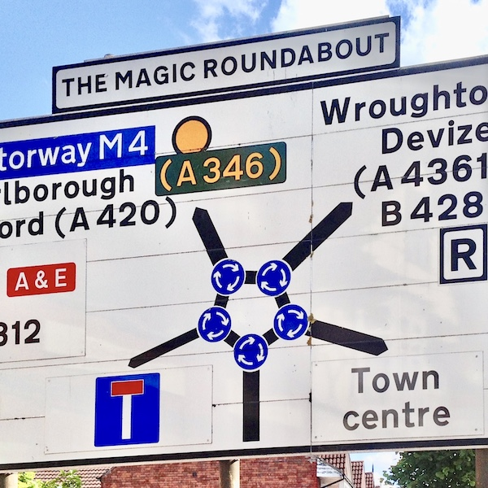

🔄 Roundabouts

🇧🇪
Altitude 100
🇧🇪
Barrière de St-Gilles
🇧🇪 Bienfaiteurs
🇺🇸
Blair Circle
🇬🇧
Charing Cross
🇺🇸
Chevy Chase Circle
🇧🇪 Churchill
🇺🇸
Columbus Circle
🇺🇸
Dupont Circle
🇩🇪
Ernst-Reuter-Platz
🇺🇸
Frederick Douglass Circle
🇺🇸
Grand Army Plaza
🇩🇪
Großer Stern
🇳🇱 Koningsplein
🇺🇸
Logan Circle
🇬🇧
Magic Roundabout
🇧🇪
Montgomery
🇬🇧
Oxford Circus
🇪🇸
Plaça d’Espanya
🇪🇸
Plaça de Tetuan
🇫🇷
Place Charles-de-Gaulle
🇫🇷
Place d’Italie
🇸🇳 Place de l’Indépendence
🇫🇷
Place de la Concorde
🇫🇷
Place de la Nation
🇫🇷
Place de la République
🇸🇳 Place des Tirailleurs
🇧🇪
Place Eugène Verboekhoven
🇸🇳 Place Sowéto
🇳🇱
Plein 1813
🇫🇷
Porte Dauphine
🇦🇹
Praterstern
🇳🇱 Prins Hendrikplein
🇧🇪
Robert Schuman Roundabout
🇺🇸 Rochester Broad Street
🇸🇳 Rond-Point Liberté 6
🇵🇱
Rondo Będzin
🇵🇱
Rondo Ziętka
🇺🇸
Scott Circle
🇺🇸
Sheridan Circle
🇺🇸
Sherman Circle
🇧🇪
Square Eugène Plasky
🇺🇸
Tenley Circle
🇺🇸
Thomas Circle
🇨🇿
Vítězné Náměstí
🇺🇸
Ward Circle
🇺🇸
Washington Circle
🇺🇸 Westmoreland Circle
See also
Tram Roundabouts
.
{kind=link}